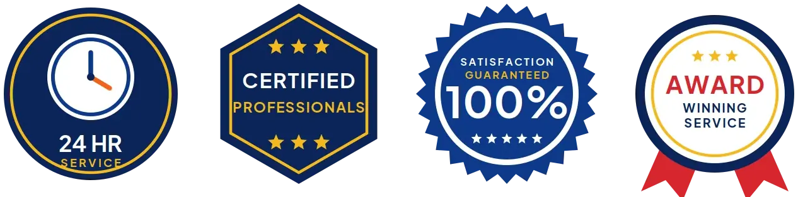
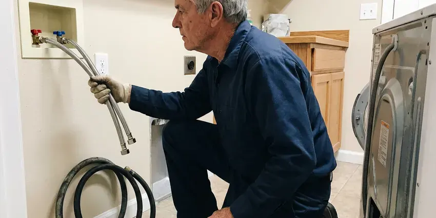
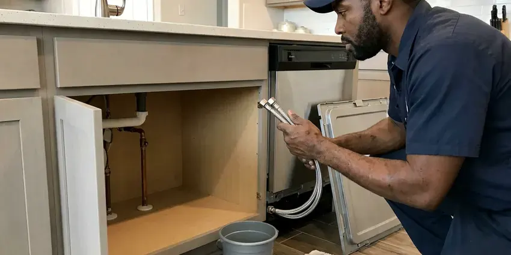

Slab Leak Repair in Manhattan, KS
For reliable slab leak repair in Manhattan, KS, trust KRV Plumbing to diagnose and fix the issue quickly. Our skilled plumbers prevent further damage to your property.
- Transparent Pricing
- Proven Foundation Protection
- Kansas-Trained Plumbers
- Expert Foundation Repair

Hear Water Under the Floor? Get Slab Leak Repair in Manhattan, KS.
Call today for slab leak detection and a written comparison of spot repair and reroute pricing.
Prompt Slab Leak Repair in Manhattan, KS for Hot and Cold Water Lines
KRV Plumbing understands the urgency and complexity of slab leaks in Manhattan, KS homes. These hidden leaks beneath your foundation can lead to costly structural damage and wasted water. Slab leaks and broken sewer laterals are common results of shifting clay, especially after long dry spells followed by heavy rain.
Our expertise includes:
- Sewer line and water line slab leak repairs.
- Accurate electronic leak detection
- Pipe rerouting and PEX repiping solutions.

Additional Plumbing Repair Services in Manhattan, KS
We offer expert plumbing repair services across Manhattan, KS to stop leaks, clear blockages, and keep every fixture working the way it should.


Manhattan water heater repair specialists


Customers
Why Choose KRV Plumbing for Slab Leak Repair in Manhattan, KS?
Choosing KRV Plumbing for your slab leak repair means you are getting a team dedicated to long-term solutions, not just quick fixes. We make sure every repair meets Kansas plumbing codes.
- Reroute Experts, We run new lines overhead when repairing under the slab is not the right choice.
- Advanced Detection, We use sensitive acoustic and thermal imaging equipment to precisely locate hidden leaks under your foundation, minimizing exploratory digging.
- Foundation Safety, Our repair methods are designed to protect your home's structural integrity, addressing the leak source without weakening your foundation.
Citywide Coverage
From older ranch homes to newer tract and custom builds, we fix slab leaks in every neighborhood of Manhattan. We bring all the equipment needed on the first visit.
Experienced Team
Our slab leak repair team at KRV Plumbing consists of highly trained and licensed plumbers with extensive experience in foundation plumbing. They regularly handle the challenges posed by soil movement and the varying foundation types found in Kansas.
Safety-First Approach
All repairs and reroutes meet local plumbing code, with proper insulation, supports and fittings. Attic lines are insulated to protect against heat and cold.
Trusted Certified Manhattan Plumbing Services Professionals
At KRV Plumbing, we take pride in providing licensed, certified plumbing services throughout Manhattan, KS. Backed by leading industry credentials, our experienced plumbers combine technical skill with genuine customer care. Whether it is repair, installation, or maintenance, we follow strict safety and quality standards to deliver lasting results you can trust.
Call Us Now PHCC Plumbing Contractor Recognition
PHCC Plumbing Contractor Recognition Better Business Bureau (BBB) Accreditation
Better Business Bureau (BBB) Accreditation Angi Certified Pro
Angi Certified Pro ISO 9001 Quality Management Certification
ISO 9001 Quality Management CertificationDependable Slab Leak Repair Services in Manhattan, KS
Slab Leak Repair Cost Comparison in Manhattan, KS
Spot repairs usually have a lower upfront cost but involve breaking concrete and repairing flooring. Reroutes cost somewhat more but avoid concrete work and future leaks in that line. Whole-house repipes are the best choice when you have had multiple slab leaks or old copper throughout. We give you written prices for each option.

PEX Repiping for Slab Leaks in Manhattan, KS
If multiple slab leaks point to a systemic issue with your home's original plumbing, a full PEX repipe might be the most cost-effective and durable solution. PEX tubing is flexible, corrosion-resistant, and less prone to leaks caused by foundation shifts, making it a strong choice for many homes. We can replace all the water supply lines in your Manhattan home, providing a brand-new, leak-free plumbing system that will last for decades.
Emergency Slab Leak Repair in Manhattan, KS
A large slab leak can push water up through flooring or into walls quickly. We help you shut off the water and send a technician to isolate the leaking line. Often we can restore water to the rest of the house while we plan the repair. Fast action limits flooring damage and soil saturation.
Pipe Rerouting and Repiping in Manhattan
For more extensive damage, multiple leaks, or pipes that are too old and corroded to repair reliably, pipe rerouting is a long-term solution. This involves abandoning the leaking line under the slab and installing a new pipe through the walls or attic. This method skips the problem area entirely, providing a fresh, durable plumbing line. It is a common solution for aging homes in Manhattan with original copper or galvanized plumbing.
Slab Leak Pipe Rerouting in Manhattan
For more complex or recurring slab leaks, or when the original piping is severely deteriorated, pipe rerouting is an excellent long-term solution. This method involves abandoning the leaky pipe under the slab and installing new plumbing lines through walls or the attic, bypassing the foundation entirely. This eliminates future slab leak risks from that particular line and is often preferred for older homes in Manhattan with aging copper or galvanized pipes.
Tunneling Slab Leak Repair in Manhattan, KS
In some cases, especially when the leak is under a load-bearing wall or in a difficult-to-access area, tunneling beneath the foundation is the preferred method. This allows our plumbers to reach the damaged pipe from outside your home, avoiding disruption to your interior floors and finishes. Tunneling spares the interior but calls for skilled excavation and shoring to protect structural integrity throughout the repair process in Manhattan, KS.
Direct Slab Penetration Repair in Manhattan, KS
When a slab leak is directly accessible and localized, direct slab penetration is often the most efficient repair method. This involves carefully cutting a small section of your concrete slab to access and repair or replace the damaged pipe section. Our team makes sure the repair is fully compliant with Kansas plumbing codes and the slab is correctly restored, preventing future issues. We take great care to contain dust and debris during this process in your Manhattan home.

Advanced Leak Detection Technology in Manhattan
Our approach to effective slab leak repair includes investing in modern diagnostic technology. We use equipment such as thermal imaging cameras to detect temperature changes caused by leaking hot water lines, and highly sensitive acoustic sensors to listen for the sound of escaping water. This technology allows us to locate leaks without guesswork, even in the varied mix of buildings across Manhattan.
Slab Leak Repair Near Me in Manhattan, KS
If you are searching for slab leak repair near me, you probably have a warm floor, a high bill or the sound of running water. Our local technicians respond fast with detection equipment. We find the leak and explain your options.
We know slab construction and soil conditions common in this area. That helps us recommend the repair method that best protects your home. Give us a call to schedule slab leak detection.
KRV Plumbing at a Glance
- Licensed and insured plumbers serving Manhattan, KS
- 24/7 emergency service with same-day scheduling
- Upfront, flat-rate pricing before work begins
- 4.9-star rated by 910+ Kansas customers
Manhattan Map
Manhattan Information
- Population
- 53,682
- Area codes
- 785/913/620
- Service area
- Manhattan and communities within 40 miles
- Nearby
- Junction City, Topeka, Emporia, Salina
Newer construction mostly uses PEX and plastic drains, while older houses often mix copper, galvanized, and plastic from past repairs. When water lines run under the concrete, water chemistry, heat and shifting soil can make slab leaks one of the most common plumbing repairs in Manhattan, KS.
Expert Services
Trust our professionals for reliable KRV Plumbing solutions in Manhattan, KS.
Our Specialized Plumbing Services in Manhattan, KS
At KRV Plumbing, we provide a complete range of plumbing services across Manhattan, KS. From leak detection to full system installations, our team ensures fast, precise, and affordable service for both residential and commercial properties. Explore our core services below:

Local plumbing repair by KRV Plumbing, Manhattan


Local kitchen plumbing by KRV Plumbing, Manhattan


How Our Slab Leak Repair Process Works in Manhattan, KS
We follow a clear, step-by-step approach so your slab leak is resolved effectively and reliably.
Request a Quote
Call (316) 229-8459 and tell us what you are noticing, such as warm floors, a high bill or running water sounds. We schedule detection promptly.
Locate the Leak
We isolate lines, pressure test and locate the leak with acoustic and thermal tools. Then we explain repair and reroute options with prices.
Repair or Reroute
We complete the chosen repair and pressure test the system. We patch concrete or drywall openings and confirm the leak is fixed.
Frequently Asked Questions About Slab Leak Repair in Manhattan
The cost of slab leak repair in Manhattan, KS can vary widely, typically ranging from $1,000 to $5,000 or more, depending on the leak's location, severity, and chosen repair method. Simple direct access repairs might be on the lower end, while extensive rerouting or tunneling will be higher. We provide a transparent, upfront estimate after a thorough inspection.
Yes, KRV Plumbing stands behind the quality of our work. We offer a warranty on our slab leak repairs, providing you with peace of mind. The specific terms of the warranty will be reviewed with you before any work begins.
Yes. Water steadily leaking under your foundation can erode the soil, leading to voids and uneven settlement, which can cause cracks in your foundation, walls, and flooring. Slab leaks and cracked sewer lines are common results of shifting clay, especially after long dry spells followed by heavy rain.
Homeowner's insurance policies vary, but many cover the cost of damage caused by a sudden and accidental slab leak, although the repair of the pipe itself might not be covered. It is best to check with your insurance provider immediately after detecting a leak. We can help provide needed documentation for your claim.
Older homes in Manhattan with copper or galvanized steel pipes are often more prone to slab leaks due to corrosion and material wear over time. While PEX is more flexible and resistant to corrosion, it can still experience leaks from installation errors, excessive pressure, or physical damage. Our team repairs all common pipe types.
Slab leaks can be caused by several factors, including shifting soil that puts stress on pipes, aggressive water chemistry leading to pinhole leaks in copper, poor pipe installation, and general aging of plumbing materials. Slab leaks and cracked sewer lines are common results of shifting clay, especially after long dry spells followed by heavy rain. Water across much of Kansas runs quite hard, leaving mineral scale in water heaters, faucets, showerheads, and dishwashers.
Detection typically takes one to three hours. Spot repairs and reroutes usually take one to two days.
You can check your water meter with all fixtures off and feel floors for warm spots. Finding the exact location requires professional detection equipment.
What People Are Saying About Our Plumbing Experts?

Patricia H.
We had a slab leak that two other companies could not find. KRV Plumbing located it in under an hour, explained our options, and the price matched the quote to the dollar.
Slab Leak Repair · Salina, KS
Daniel K.
A pipe burst at 11 pm and they actually answered. The plumber showed up within the hour, shut everything down, and had us back to normal the next morning. Could not ask for more.
Emergency Plumbing · Junction City, KS
James P.
Our commercial plumbing system had a leak under the sink, and KRV Plumbing handled it professionally. The plumbers arrived quickly and restored everything without disruption to our customers.
Commercial Plumbing · Emporia, KS
Mark T.
When our office needed drain cleaning, KRV Plumbing provided quick, reliable service. The plumber arrived on time and made sure every drain flowed perfectly before leaving. Very satisfied.
Drain Cleaning · Salina, KS
Laura S.
I scheduled a water heater replacement, and the team made the process smooth and affordable. The new unit works perfectly, and they cleaned up after completing the job.
Water Heater Replacement · Junction City, KSSofia M.
Two new toilets installed in one visit, no mess left behind, and the tech even adjusted a faucet he noticed was dripping. Fair pricing and really friendly.
Toilet Installation · Lawrence, KS